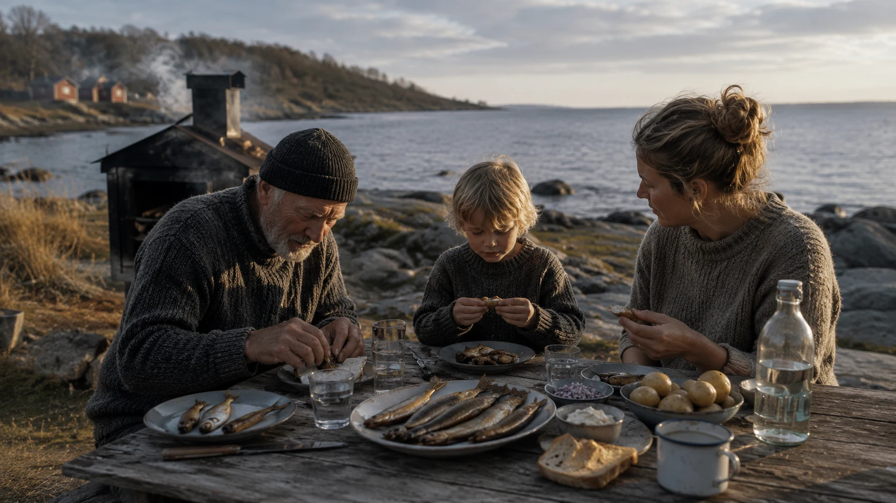

Research context
This example comes from Baltic-related materials, but it is meant to show a generic gap in evidence use and decision continuity.
Archived exploratory research example.
This page documents one exploratory case of evidence-to-decision work. It is a research example, not a live engagement or an active service offer.
The example grew from a personal interest in improving how complex environmental project outputs are reused and tracked. It started with a Baltic research context, but the core challenge is broader: make evidence easier to find, compare, and act on.
Personal origin note: Borrowed Fluency.
That origin is a motivation, not the product. The focus here is on a reusable, honest approach to evidence clarity.

This example comes from Baltic-related materials, but it is meant to show a generic gap in evidence use and decision continuity.
Many actors create useful outputs, yet the later decisions that depend on them often cannot find the right material at the right time.
The core problem is not the evidence itself; it is the way evidence is framed, traced, and handed over.
Better reuse and traceability can reduce rework and make project outputs more valuable across contexts.
The example highlights a common execution gap: useful outputs exist, yet they are not consistently reusable or traceable by later decision-makers.
This research example does not claim to replace subject-matter expertise, monitoring infrastructure, or policy authority. It explores how translation, traceability, and decision usability can improve the value of existing outputs.
Identify which outputs exist, what problems they address, and whether they can be reused across related decisions.
Make recommendation logic explicit from source evidence through assumptions to the chosen priority.
Show how outputs can be packaged for later teams so re-discovery costs are reduced.
Teams need to make project outputs easier to find, compare, and reuse across decisions.
The need is for operations, monitoring deployment, or formal policy execution rather than evidence clarity.
This page is a documented research case. It is kept public because it shows how B1C3 thinks about evidence and decision support, not because it represents a current client project.
Contact: contact@b1c3.dev